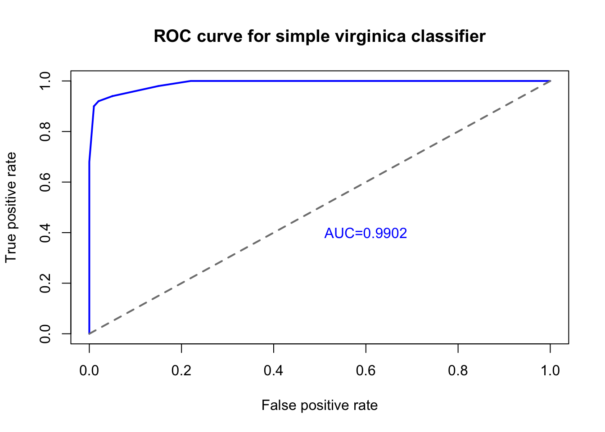

Code
Ma <- glm(I(Species=='virginica') ~ Petal.Width,binomial(link='probit'),iris)
table(iris$Species=='virginica',round(Ma$fitted.values))[2:1,2:1]The previous section (GLM goodness-of-fit) dealt with techniques which determine whether predictors belong in the model, or whether the true parameters might be equal to one value or another. What they don’t determine is how well our model performs at prediction or classification. Let’s develop new metrics to help objectively measure how well our model explains the data.
Our response variable \(Y\) takes on two values, 0 and 1. Our model predictions are estimated mean response values \(\hat{\mu}_i\), which are always between 0 and 1. If we select some classification boundary \(p^*\) (typically 0.5), we can classify each observation in our sample as belonging to the “0” class or the “1” class as follows:
\[\hat{y}_i = 1\!\!1\{\hat{\mu}_i>p^*\}\]
Our next step would be to measure the correspondence between (a) when our data are classified as 0 or 1 and (b) when our data actually were 0 or 1. The most common way to represent this relationship is through a 2x2 table called the confusion matrix. Let’s consider the simpler model from the previous section which classified Iris virginica specimens only by their petal width:
Ma <- glm(I(Species=='virginica') ~ Petal.Width,binomial(link='probit'),iris)
table(iris$Species=='virginica',round(Ma$fitted.values))[2:1,2:1]| Predicted | ||||
| virginica | other | (total) | ||
| Actual | virginica | 46 | 4 | 50 |
| other | 2 | 98 | 100 | |
| total | 48 | 102 | 150 |
We can create a confusion matrix similar to the one above for any binary classification model: a GLM, a linear probability model, even machine learning models such as support vector machines (SVMs) and random forests of decision trees. From this simple confusion matrix we may readily develop a large number of metrics.
(First, a word of caution: in this example, we are trying to identify Iris virginica specimens, and so it makes sense to label a “positive” finding as a virginica prediction. In other classification models, the two classes will be difficult to distinguish, and care must be taken to explain which class is the “positive” finding and which the “negative.”)
False positive rate. False positives would be instances in which we predict that an iris specimen is a virginica, when in fact it is another species: we have 2 false positives in this model. The false positive rate is the proportion of all actual negatives that are wrongly labeled positive, and is analogous to the Type I error rate; in this example, \(\frac{2}{2+98} = \frac{2}{100} = 2.00\%\)
False negative rate. False negatives would be instances in which we predict that an iris specimen is something other than virginica, when in fact it is virginica: we have 4 false negatives in this model. The false negative rate is the proportion of all actual positives that are wrongly labeled negative, and is analogous to the Type II error rate; in this example, \(\frac{4}{4+46} = \frac{4}{50} = 8.00\%\)
Precision. Our predictions for virginica irises are precise when they contain few mistakes, that is, most of our predicted virginicas really are virginicas. Precision is the proportion of all predicted positives which are actual positives; in this example, \(\frac{46}{46+2} = \frac{46}{48} \approx 95.83\%\)
Recall. Our predictions are said to have good recall when none of the true virginicas are “forgotten”, meaning that they were thought to be another species. Recall is the proportion of all actual positives which are predicted positive, and is also called the true positive rate or the sensitivity, and is analogous to the power of the test; in this example, \(\frac{46}{46+4} = \frac{46}{50} = 92.00\%\)
Specificity. Our predictions for virginica irises are specific when they correctly rule out most of the other flowers. Specificity is the proportion of all actual negatives which are predicted negative, and is also called the true negative rate; in this example, \(\frac{98}{98+2} = \frac{98}{100} = 98.00\%\)
Accuracy. While the metrics so far have focused on positive or negative identifications, sometimes we simply wish to measure how often we are “right”, without regard to any specific class. Accuracy is the proportion of all predictions which match their actual values; in this example, \(\frac{46+98}{50+100} = \frac{144}{150} = 96.00\%\)
Each of these metrics have their place; they become more or less important depending on the context of the classification problem. Consider these two contrasting scenarios:
When creating a distribution list for a print or web advertisement, we might focus on precision over recall: if the client only has enough budget to place their ad in front of 100,000 people, then we want that group of 100,000 to contain as many “high-value targets” as possible (high precision), without worrying about how many other high-value targets are being left out (low recall).
When developing a screening diagnostic test for breast cancer, we might want to focus on recall over precision: we are willing to wrongly suspect cancer and advise those people to get a more intense examination (low precision) if it means that we almost never miss a case of cancer and wrongly tell that patient they are cancer-free (high recall).
Of course, in some situations we want to prioritize both precision and recall, and would not accept a model which fully sacrificed one metric in order to focus on the other. For such occasions, we have yet another metric:
Although the metrics described above are important and commonly used ways to describe classification performance, they are affected by class imbalance, which occurs when one of the two binary outcomes is much more common than the other. For example, let us suppose that I am a charlatan who is trying to sell a “test” for a genetic disorder affecting only 1% of the population. However, in reality I have no test at all, and simply tell everyone who pays for my “test” that they do not have the disease.
Nobody would say that I had built a powerful or effective model for predicting this disease. But my false positive rate would be 0%, my specificity would be 100%, and because of the extreme class imbalance of this scenario, my accuracy would be 99%. I could truthfully say that my test was 99% accurate when it did nothing at all to evaluate the patient!
Undersampling and oversampling techniques can be used to train better models and find better parameter estimates despite class imbalance, but these techniques are beyond the scope of this course. Instead, I will show a more advanced metric which can be used to more honestly assess models built in the presence of class imbalance:
All of the metrics presented so far have presumed that our threshold for classifying an observation as belonging to the target class is \(p^*=0.5\). However, our models will perform better or worse when we change the threshold at which we classify into the target class. The last classification metric I wish to present allows us to better understand how our models perform across the full range of possible threshold values. Naturally, we expect that if we restrict to cases where our model is almost certain (say, \(p^*=0.95\)), this group of predictions has a high precision but a low recall, while if we look among all the cases where our model even hints at a possible match (say, \(p^*=0.05\)), we will see great recall but low precision. However, really good models achieve both high true positive rates and low false positive rates:
roc.x <- sapply(seq(0.000,1,0.001),function(z) mean(Ma$fitted.values[iris$Species!='virginica']>=z))
roc.y <- sapply(seq(0.000,1,0.001),function(z) mean(Ma$fitted.values[iris$Species=='virginica']>=z))
mean(roc.y)[1] 0.9035564plot(roc.x,roc.y,type='l',xlim=c(0,1),ylim=c(0,1),
xlab='False positive rate',ylab='True positive rate',
main='ROC curve for simple virginica classifier',
col='#0000ff',lwd=2)
lines(x=c(0,1),y=c(0,1),lty=2,lwd=2,col='grey50')
text(0.6,0.4,'AUC=0.9902',col='#0000ff',cex=1)
When we plot the true positive rate against the false positive rate we create a graph known as the receiver-operator characteristic, commonly called the ROC curve.2 The blue line in the figure above shows the ROC of our simple virginica classifier (using only petal width!), which is really quite successful. To achieve a true positive rate of 90% we only need accept a false positive rate of 1%, and to achieve a true positive rate of 100% we only need accept a false positive rate of 22%. The diagonal grey line in the figure above represents the performance of a random label assignment using no predictive modeling information — if our ROC curve fell along this line, then we would have a bad model, one that was no better than assigning labels by chance.
One way we can summarize the total performance of this model across a variety of cutoff points is to measure the total area under the curve (AUC). ROC curves like the one above, which extends far from the diagonal grey line, provide a lot of value relative to a random guess, no matter how sensitive you set your classification threshold. A perfect model that would achieve a 100% true positive rate with a 0% false positive rate would fill the entire square of the diagram, and the area under that curve would be 1. By measuring the area under the curve for any binary classification model, we can summarize its sensitivity and specificity with one single number, the AUC. In this case, our AUC is over 0.99, which is fairly rare in real-world classification problems.
Compare to its accuracy of 96%… here the class imbalance is not very bad, and the accuracy within each class is similar, so the two metrics are not far apart.↩︎
This name comes from the field of electrical engineering, where ROC curves were used to study the ability of a receiver to pick up a faint signal accurately.↩︎